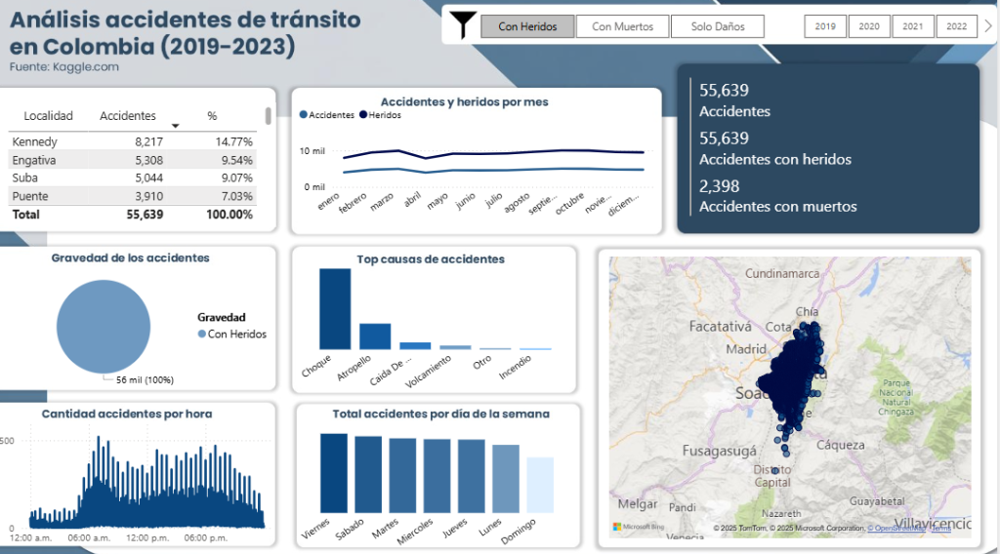
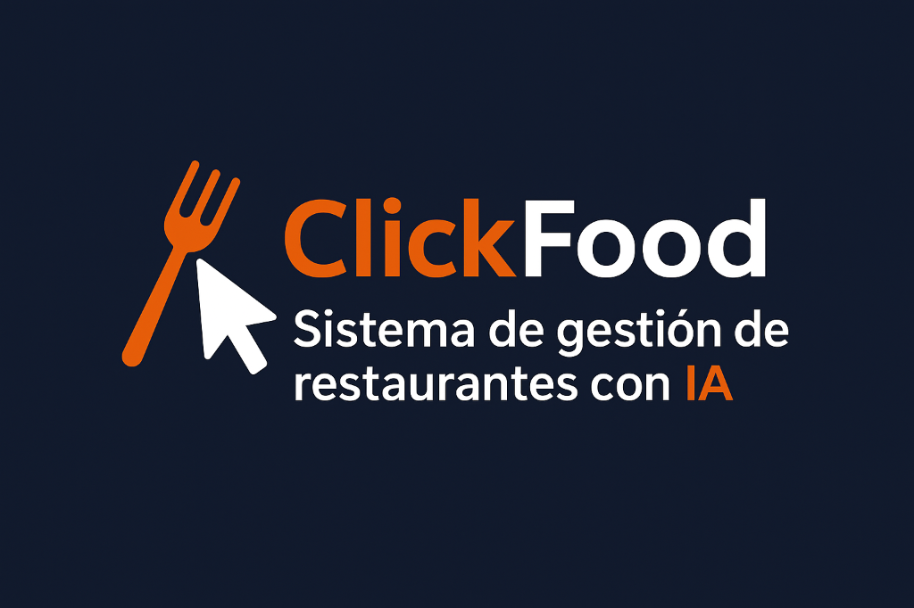
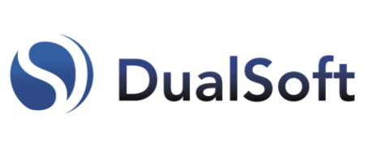
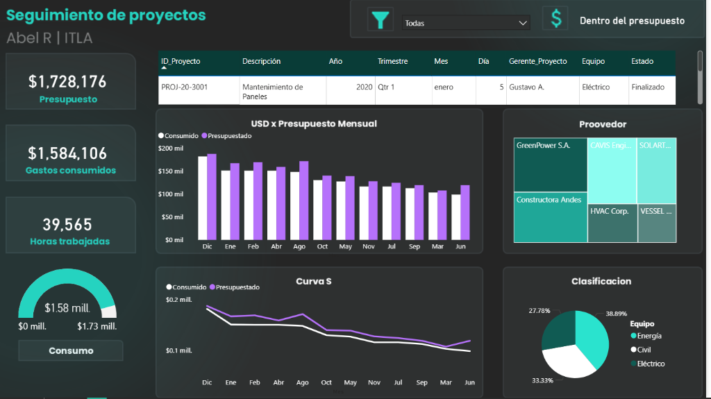
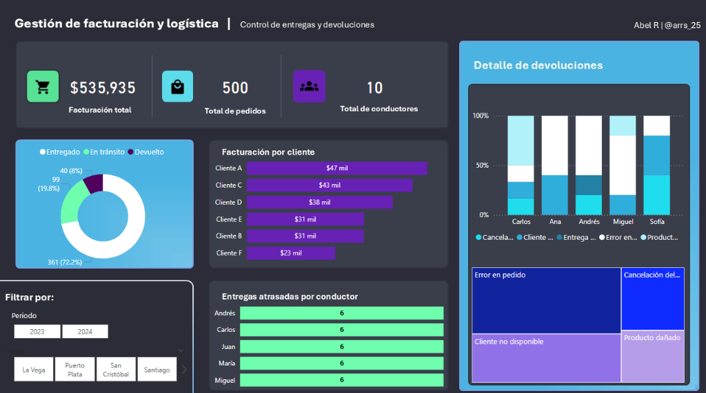
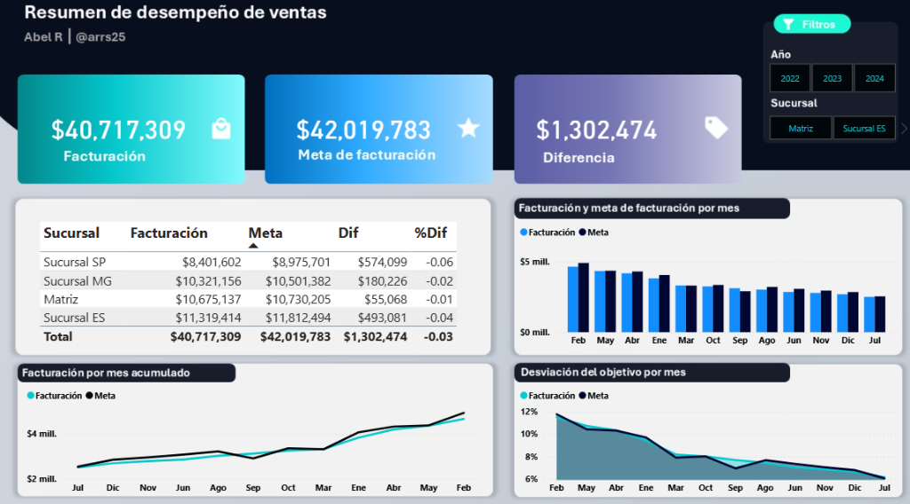

Dashboard Siniestralidad
Análisis interactivo de accidentes viales utilizando Power BI. Procesamiento de grandes volúmenes de datos para identificar patrones de riesgo.
Transformo datos complejos en soluciones de negocio estratégicas. Especializado en SQL, Power BI y Python con un enfoque en optimización de procesos.
Analista de Datos y Desarrollador de Software con experiencia práctica en la creación de dashboards estratégicos y arquitectura backend. Apasionado por la optimización de procesos y la implementación de modelos predictivos.
Desarrollé dashboards de gestión en Power BI y Metabase, optimizando la visibilidad de KPIs y reduciendo el tiempo de análisis gerencial en un 40%.
Desarrollé la lógica del servidor enfocada en el análisis de datos. Implementé algoritmos de inteligencia artificial para generar métricas predictivas de ventas y consumo. Optimicé consultas en base de datos.
Diseñé un tablero interactivo en Power BI procesando más de 55,000 registros de accidentes (Fuente: Kaggle). Análisis de tendencias temporales y KPIs de gravedad.

Análisis interactivo de accidentes viales utilizando Power BI. Procesamiento de grandes volúmenes de datos para identificar patrones de riesgo.

Lógica de servidor para análisis predictivo de ventas y consumo. Implementación de algoritmos de IA.

Dashboards de gestión y optimización de KPIs reduciendo el tiempo de análisis en un 40%.

Dashboard de seguimiento de proyectos con KPIs financieros y operativos. Análisis mensual y curva S para detección de desviaciones. Proyecto documentado con archivo PBIX disponible en GitHub.

Solución de BI para monitorear facturación de $535k+ y el ciclo de vida de 500 pedidos. Análisis de causas de devolución y métricas de rendimiento por conductor para optimizar la logística de última milla.

Tablero estratégico para monitorear facturación anual superior a $40 Millones, comparando desempeño real vs metas (Budget). Medidas DAX avanzadas para calcular desviaciones y proyecciones por sucursal.